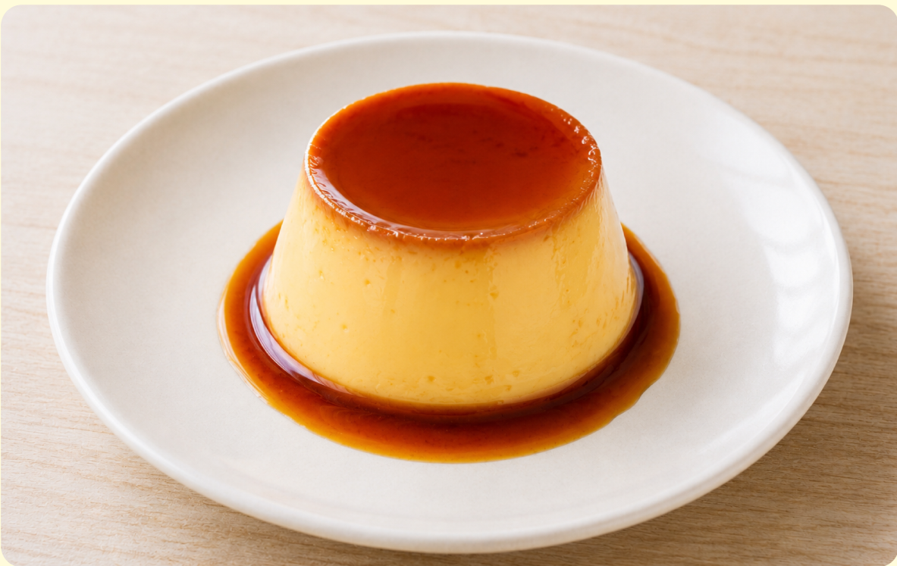
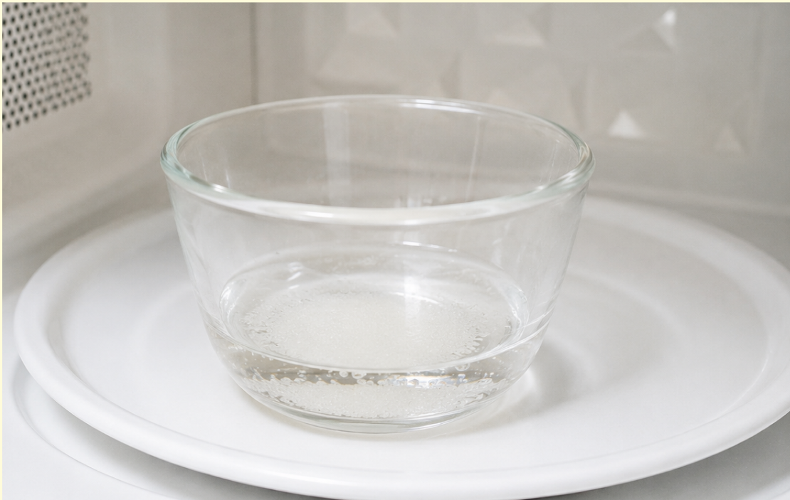
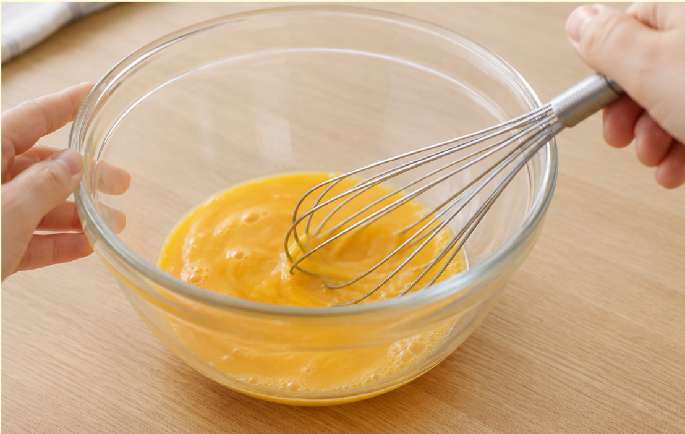
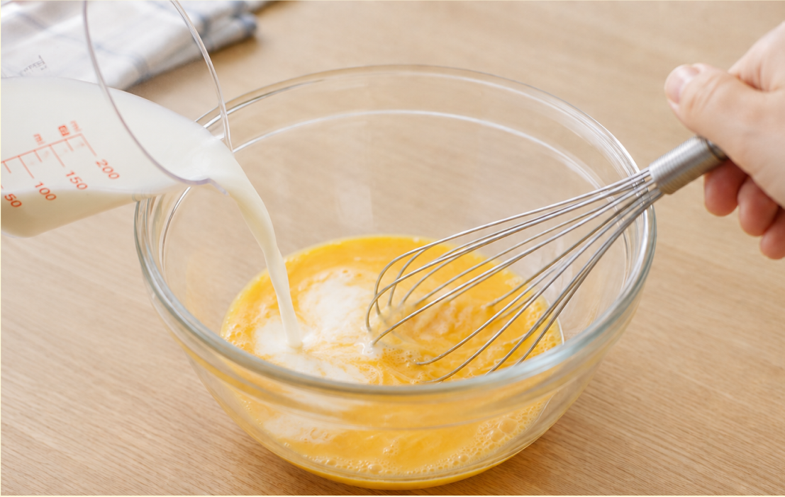
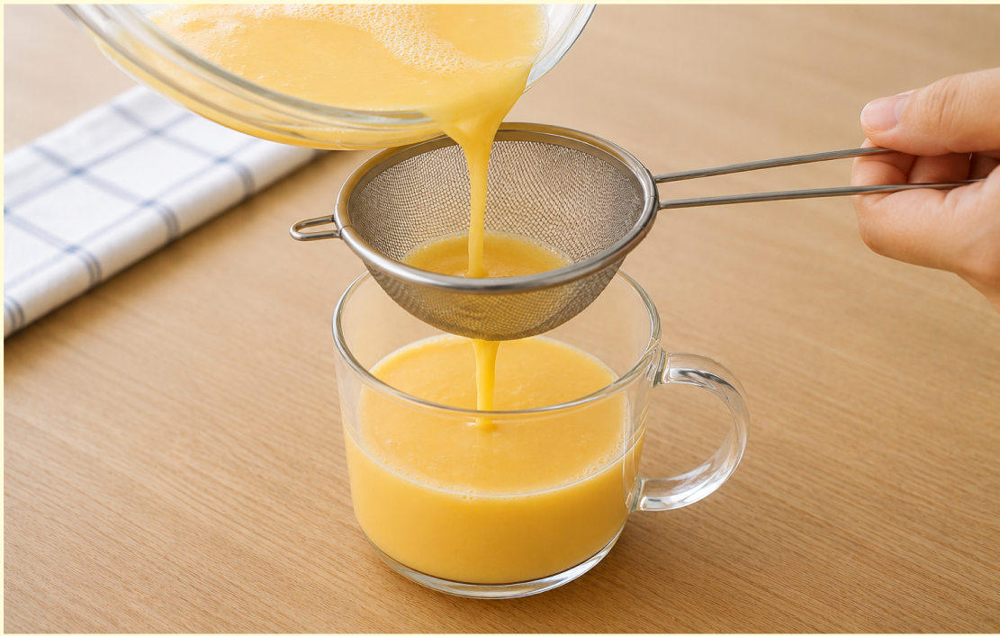
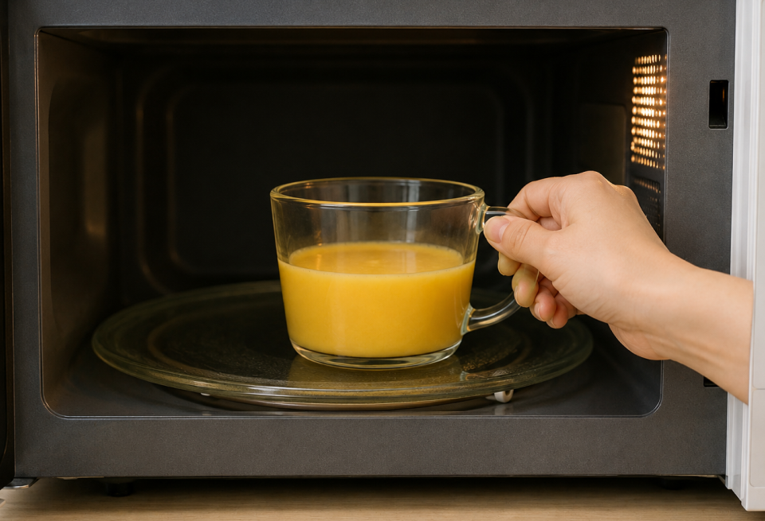
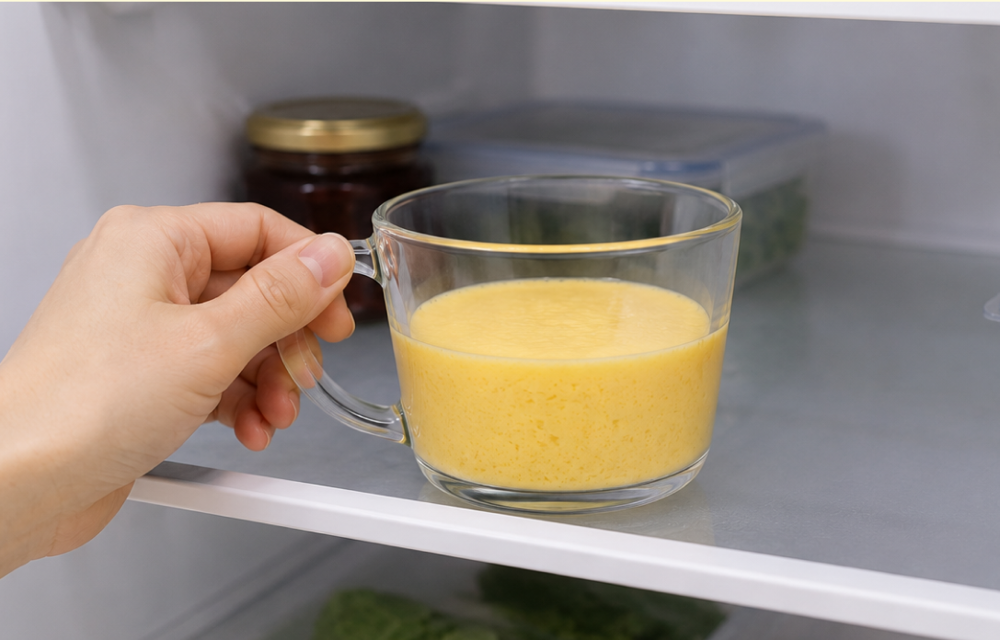

難易度2
★★☆
材料（一人分）
- ・卵1個
- ・牛乳100ml
- ・砂糖大さじ1
- ・バニラエッセンスお好みで
- カラメルソース（なくてもOK）
- ・砂糖大さじ1
- ・水大さじ1
- ・熱湯小さじ1
必要な道具
- ・耐熱カップ
- ・ボウル
- ・泡立て器
- ・茶こし（あれば）
- ・電子レンジ
- ・湯沸かし器（あれば）
注目ポイント
- 🚫 包丁を使わない
- 🚫 火を使わない
作り方
① カラメルソースはなくても作れます。耐熱カップに砂糖と水を入れ、電子レンジで20〜40秒加熱します。茶色くなったら熱湯を加えて混ぜます。

② ボウルに卵を割り入れ、泡立てすぎないように優しく溶きます。

③ 牛乳と砂糖を加え、砂糖が溶けるまで混ぜます。バニラエッセンスを使う場合はここで加えます。

④ 茶こしがあれば、こしながら耐熱カップへ注ぎます。よりなめらかなプリンになります。

⑤ 600Wで30秒加熱し、様子を見ながら10秒ずつ追加加熱します。表面が少し揺れるくらいで止めます。

⑥ 粗熱が取れたら冷蔵庫で1時間以上冷やします。しっかり冷えたら完成です。

調理のコツ
卵は泡立てすぎないようにしましょう。
加熱しすぎると表面がボソボソになりやすいので、少し揺れるくらいで止めるのがポイントです。
追加加熱は10秒ずつ行うと失敗しにくくなります。
アレンジ
はちみつを少しかけると、優しい甘さになります。
ココアを少量混ぜるとチョコ風味のプリンになります。
ホイップクリームやフルーツを添えても美味しく食べられます。